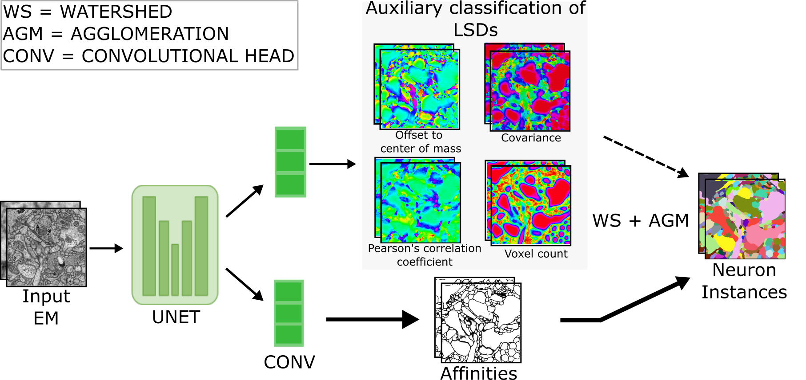

Local Shape Descriptors¶
Short overview of what this module does and links to usage.
- Install & Usage: Please follow module's README and scripts in GitHub for most up-to-date documentation.
- Design Choices: See Design Choices for the "why" behind the "what".
Note Our automated methods for connectome mapping will use Electron Microscopy (EM) datasets.
What is neuron segmentation?¶
In connectomics -- the art of mapping neural wiring diagrams -- we want to trace every neuron throughout a dataset (here Electron Microscopy images or volumes of real brains). These neurons are long, wiggly structures that snake across regions, branch, loop back, and find their friends (other neurons) to make synaptic connections.
Traditionally, people did this by hand using CATMAID-like toolkits (The Collaborative Annotation Toolkit for Massive Amounts of Image Data). This is slow, exhausting, and extremely hard to scale to modern datasets that can span terabytes to petabytes. Neuron segmentation is about automating this tracing process so we can reliably reconstruct whole connectomes without an army of human annotators.
What are Local Shape Descriptors?¶
Local Shape Descriptors (LSDs) introduce an auxiliary learning task aimed at improving neuron segmentation within electron microscopy volumes. These descriptors are employed alongside conventional voxel-wise direct neighbor affinities to enhance neuron boundary detection. By capturing key local statistics of neurons, such as diameter, elongation, and direction, LSDs significantly refine segmentation accuracy. Comparative studies across a variety of specimens, imaging techniques, and resolutions reveal that incorporating LSDs consistently elevates the performance of affinity-based segmentation methods. This approach not only matches the effectiveness of current state-of-the-art neuron segmentation techniques but also offers a leap in computational efficiency, making it indispensable for processing the extensive datasets expected in future connectomics research.
- Read the paper here: Sheridan et al., Nature Methods, 2023
- Read the original LSD blogpost here
LSDs architecture at a glance (multi-task U-Net)

Note These are supervised ML models, hence you need ground truth. Primary tests reveal 40 cubic microns of densely segmented volumes is good to begin with.
Getting started¶
Read these:
- System Requirements
- Installation instructions: Docker, Conda
- Dataset preparation
Usage instructions¶
IMPORTANT If you want to only run inference with pretrained model, follow steps.
Semantic Segmentation to get the affinity maps¶
1. Understand and modify as needed the config.py
For training models
`config.py` contains `SYSTEM`, `DATA`, `PREPROCESS`, `TRAIN`, `MODEL_ISO` (for isotropic datesets) and `MODEL_ANISO` (for anisotropic datasets). Most of these configurations and hyper-parameters have been populated with default used during experiments. You may want to modify them to suit your needs. Please look at the commented text adjacent to the hyper-params set to get an idea of what they are. Separate `config.py` files for public datasets like CREMI, SNEMI, ZEBRAFINCH are provided. For running inference with trained models
`config_predict.py` should be used to run affinity prediction. All configurations set in the file should be automatically picked up by `predicter.py` or `super_predicter_daisy.py`. Ensure you set the same architectural hyper-parameters under `MODEL_ISO` OR `MODEL_ANISO` for pytorch to load the weights correctly. Also, ensure you put the data in the correct path inside a `test` folder, and pass the correct `model checkpoint`.
2. Train models with trainer.py
For training models
Set the hyper-params in the `config.py` file and then run:
python trainer.py -c config_cremi.py
3.1 Run affinity predictions as a single process with predicter.py
You can place as many datasets in the `test` folder of your `BRAIN_VOLUME` as you want. Each will be processed but sequentially. Download **pretrained** models from [here](https://www.dropbox.com/scl/fo/uxmoj3v6i8mos6lwjjvio/h?rlkey=w10iia8rd8alkx3i67u88w0er&dl=0). These models have mostly been trained with default architectural params. We will share more details sooner. Please modify `config_predict.py` to match your `config.py` used during training. Check **above** for details. Run prediction
python predicter.py
3.2 Run affinity predictions blockwise multiprocessing with super_predicter_daisy.py
> **WARNING**> THIS HAS ONLY BEEN TESTED WITH 3D VOLUMES AND USE `SBATCH` FOR SLURM TO SPAWN ACROSS MULTIPLE CARDS AND A VERY LARGE DATASET. > YOU CAN CHANGE IT TO A LOCAL `SUBPROCESS` RUN. WE WILL ALLOW A `ARGS` INPUT FOR THIS SOON. You can place as many datasets in the `test` folder of your `BRAIN_VOLUME` as you want. Each will be processed but sequentially USING MULTIPLE-WORKERS, which makes the predictions faster. Download **pretrained** models from [here](https://www.dropbox.com/scl/fo/uxmoj3v6i8mos6lwjjvio/h?rlkey=w10iia8rd8alkx3i67u88w0er&dl=0). These models have mostly been trained with default architectural params. We will share more details sooner. Please modify `config_predict.py` to match your `config.py` used during training. Check **above** for details. Run prediction parallely with Daisy task scheduling
python super_predicter_daisy.py -c config/config_predict_{brain_volume}.py
python super_predicter_daisy_chunkskipping.py -c config/config_predict_{brain_volume}.py
Instance Segmentation from predicted affinities¶
IMPORTANT Output segmentations are saved in the same output zarr under
lsd_outputscontainingvolumes/pred_affs. Agglomeration thresholds are appended to dataset names:volumes/segmentation_055
4.1 Extract supervoxels and agglomerate for small ROIs with instance_segmenter.py
> **WARNING**> This script should be used with volumes that fit into memory. Predicted affinities are cast as before watershedding float32, so you should have enough RAM. You must keep the output affinities under `lsd_outputs` for `instance_segmenter.py` to pick them up. Edit data paths in `config_predict.py`. Watershed and agglomeration will be run sequentially on all output *zarr* files that contain `volumes/pred_affs`.
Run watershed and agglomeration
python instance_segmenter.py
4.2 Extract supervoxels chunk-wise from large volumes with 02_extract_fragments_blockwise.py
> **IMPORTANT**> Install [MongoDB](https://www.mongodb.com/docs/manual/installation/) before you begin.
> Ensure you have `pymongo~=4.3.3` and `daisy~=1.0` > **WARNING**
> `db_host = "localhost:27017"` and `db_name = "lsd_parallel_fragments"` are hardcoded as these in the script. Yet to be supported via `config_predict.py`. `collection_name` would be auto set to the name of your zarr file. Run watershed with daisy chunk-wise
python 02_extract_fragments_blockwise.py
5. Agglomerate supervoxels of large volumes chunk-wise with 03_agglomerate_blockwise.py
> **WARNING**> This cannot be run if `02_extract_fragments_blockwise.py` has not been run. Run agglomeration with daisy chunk-wise
python 03_agglomerate_blockwise.py
Final steps to extract final segmentation for LARGE volumes¶
6. Finding all segments and saving them as Look-Up-Tables (LUTs) 04_find_segments_full.py
> **WARNING**> This cannot be run if `03_agglomerate_blockwise.py` has not been run.
> **Don't forget to pass `daisy_logs/{filename}_fragments/config_0.yaml` from your daisy_logs folder auto-created under `catena/local_shape_descriptors`.**
> Output LUTs are saved under `lsd_outputs` Create a LUT file
Note: `hist_quant_50` must exist in the db as a collection. If not, check your config file to find at what is the starting value of `_C.INS_SEGMENT.THRESHOLDS`, that is your `hist_quant_{value_in_decimals * 100}`. Example: for `_C.INS_SEGMENT.THRESHOLDS = np.arange(0.35, 0.80, 0.05).tolist()`, you should pass `-mf hist_quant_35`.
python 04_find_segments_full.py -c daisy_logs/{filename}_fragments/config_0.yaml -mf hist_quant_50 -th 0.7
Extracting a final segmentation 05_extract_segmentation_from_lut.py
> **WARNING**> This cannot be run if `04_find_segments_full.py` has not been run.
> **Don't forget to pass `daisy_logs/{filename}_pred_affs/config_0.yaml` from your daisy_logs folder auto-created under `catena/local_shape_descriptors`.**
> Final segmentations are saved in the zarr under `lsd_outputs`. Extract Segments from LUT
Note: `hist_quant_50` must exist in the db as a collection. If not, check your config file to find at what is the starting value of `_C.INS_SEGMENT.THRESHOLDS`, that is your `hist_quant_{value_in_decimals * 100}`. Example: for `_C.INS_SEGMENT.THRESHOLDS = np.arange(0.35, 0.80, 0.05).tolist()`, you should pass `-mf hist_quant_35`.
python 05_extract_segmentation_from_lut.py -c daisy_logs/{filename}_fragments/config_0.yaml -mf hist_quant_50 -th 0.7
NOTE Small Rois can be proofread with Napari-based Seg2Link.
Performance of LSDs on held-out (in-distribution) and out-of-distribution datasets¶
- Performance on Octo (unseen data): A Multi-task (MT) LSD model trained solely on Hemibrain (resolution:
8nm^3, FIBSEM;~40microns) dataset on Octo (resolution:8nm^3, FIBSEM;20 x 200 x 200Roi in zyx) achieves~0.05Adapted Rand Error for a segmentation for agglomeration thresholds50%-60%.

- 3D Neuroglancer Snapshot of Selected Segmentations